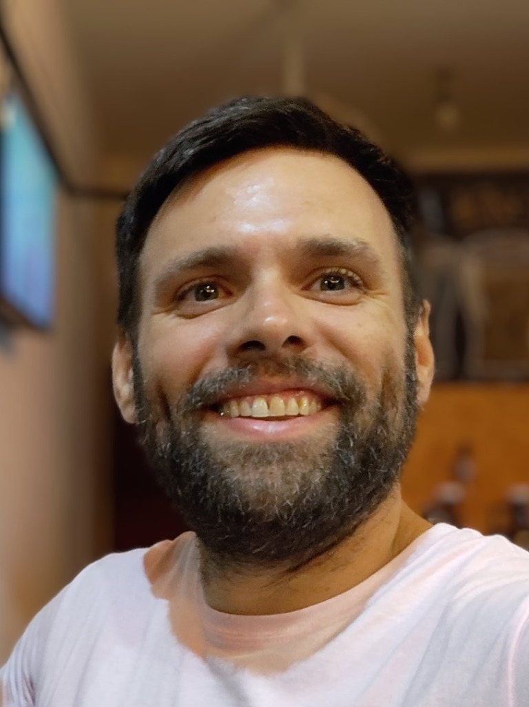

Disponible para prácticas o pasantías · Portfolio académico
Eduardo Javier Buet
Estudiante de Licenciatura en Sistemas de Información
Mi formación combina el pensamiento sistémico con el desarrollo web y el diseño centrado en las personas. En proyectos como Cubrí Seguros y Coffea practico cómo transformar requisitos en recorridos funcionales e interfaces claras, documentando las decisiones y el alcance de cada propuesta.
ESTUDIANTE Aprendizaje aplicado a proyectos académicos.

Estudiante de Sistemas
UADER · FCyT
Formación universitaria, práctica técnica y proyectos con propósito.
LICENCIATURA EN SISTEMAS DE INFORMACIÓN01 — PERFIL
Sistemas con
perspectiva humana.
Estudio Sistemas de Información en la Universidad Autónoma de Entre Ríos.
Mi formación combina el análisis de problemas, la programación y la comprensión de cómo las personas interactúan con la tecnología. En los trabajos de la carrera exploro distintas etapas del desarrollo: desde ordenar una propuesta y su contenido hasta construir y revisar una interfaz funcional.
Este portfolio reúne proyectos académicos y ejercicios de aprendizaje. Presento cada trabajo según su alcance real, incluyendo las etapas que todavía están en exploración.
Aprender con práctica
Convertir conceptos de la carrera en ejercicios y entregables concretos.
Ordenar antes de construir
Dar estructura a la información y a los pasos de cada experiencia.
Diseñar para las personas
Buscar interfaces comprensibles, accesibles y adaptables a cada pantalla.
02 — CONOCIMIENTOS EN FORMACIÓN
Herramientas para
pensar y construir.
Tecnologías y prácticas que forman parte de mi aprendizaje y de los proyectos que presento en este portfolio.
Desarrollo web
HTML · CSS · JavaScript · diseño responsive
Programación y datos
Python · C++ · PHP · SQL
Diseño UX/UI
Arquitectura de información · diseño de interfaces · experiencia de usuario
Control de versiones
Git · GitHub · organización del código fuente
03 — TRABAJOS SELECCIONADOS
Proyectos académicos.
Casos de estudio, una landing page y una exploración inicial. Cada ficha explicita el alcance alcanzado.
01 CASO DE ESTUDIO
PRODUCTO DIGITAL · CONTRATACIÓN
Cubrí Seguros
Un flujo web para cotizar y simular la contratación de un seguro para celulares.
Organicé la experiencia en etapas de cotización, selección de plan, datos del titular y pago simulado, con validaciones y estados de resultado.
Leer caso de estudioDESAFÍO
Guiar una contratación digital a través de varios pasos.
APRENDIZAJE
Hacer visibles el avance, las validaciones y el estado de cada etapa.
ALCANCE
Prototipo frontend; no procesa pagos ni brinda cobertura real.
03 / EXPLORACIÓN · 2026
OpenArt NFTs
Trabajo académico basado en un brief. El alcance visible es exploratorio y no incluye un prototipo final.
Próximo paso: precisar el problema y el usuario antes de avanzar con una propuesta de interfaz.
04 — FORMACIÓN Y TRAYECTORIA
Una formación
en desarrollo.
Presento mi recorrido académico y el trabajo aplicado en proyectos, sin atribuirme experiencia laboral que no forma parte de la información disponible.
EN CURSO01
Licenciatura en Sistemas de Información
Universidad Autónoma de Entre Ríos · Facultad de Ciencia y Tecnología
- Formación universitaria en sistemas y tecnologías de información.
- Aplicación de contenidos de UX/UI y desarrollo en trabajos académicos.
202602
Proyectos académicos de diseño y desarrollo web
Práctica aplicada en proyectos individuales y ejercicios de la carrera.
- Definición de producto y maquetación web para la landing page Coffea.
- Implementación de un flujo frontend de contratación para Cubrí Seguros.
05 — CONTACTO
Contacto académico y oportunidades de prácticas.
Para consultas sobre mis proyectos, intercambios académicos o propuestas de prácticas y pasantías, completá el formulario. Al prepararlo, se abrirá tu aplicación de correo para que revises y envíes el mensaje.